Last updated: 2025-08-05
Checks: 7 0
Knit directory:
genomics_ancest_disease_dispar/
This reproducible R Markdown analysis was created with workflowr (version 1.7.1). The Checks tab describes the reproducibility checks that were applied when the results were created. The Past versions tab lists the development history.
Great! Since the R Markdown file has been committed to the Git repository, you know the exact version of the code that produced these results.
Great job! The global environment was empty. Objects defined in the global environment can affect the analysis in your R Markdown file in unknown ways. For reproduciblity it’s best to always run the code in an empty environment.
The command set.seed(20220216) was run prior to running
the code in the R Markdown file. Setting a seed ensures that any results
that rely on randomness, e.g. subsampling or permutations, are
reproducible.
Great job! Recording the operating system, R version, and package versions is critical for reproducibility.
Nice! There were no cached chunks for this analysis, so you can be confident that you successfully produced the results during this run.
Great job! Using relative paths to the files within your workflowr project makes it easier to run your code on other machines.
Great! You are using Git for version control. Tracking code development and connecting the code version to the results is critical for reproducibility.
The results in this page were generated with repository version 852dd98. See the Past versions tab to see a history of the changes made to the R Markdown and HTML files.
Note that you need to be careful to ensure that all relevant files for
the analysis have been committed to Git prior to generating the results
(you can use wflow_publish or
wflow_git_commit). workflowr only checks the R Markdown
file, but you know if there are other scripts or data files that it
depends on. Below is the status of the Git repository when the results
were generated:
Ignored files:
Ignored: .Rproj.user/
Ignored: data/gwas_catalog/
Untracked files:
Untracked: data/.DS_Store
Untracked: renv/
Unstaged changes:
Modified: .Rprofile
Note that any generated files, e.g. HTML, png, CSS, etc., are not included in this status report because it is ok for generated content to have uncommitted changes.
These are the previous versions of the repository in which changes were
made to the R Markdown (analysis/icite_rcr.Rmd) and HTML
(docs/icite_rcr.html) files. If you’ve configured a remote
Git repository (see ?wflow_git_remote), click on the
hyperlinks in the table below to view the files as they were in that
past version.
| File | Version | Author | Date | Message |
|---|---|---|---|---|
| Rmd | 852dd98 | IJbeasley | 2025-08-05 | Convert icite analysis to workflowr page |
knitr::opts_chunk$set(
echo = TRUE,
message = FALSE,
warning = FALSE
)
library(httr)
library(jsonlite)
library(dplyr)
Attaching package: 'dplyr'The following objects are masked from 'package:stats':
filter, lagThe following objects are masked from 'package:base':
intersect, setdiff, setequal, unionlibrary(data.table)
Attaching package: 'data.table'The following objects are masked from 'package:dplyr':
between, first, lastlibrary(purrr)
Attaching package: 'purrr'The following object is masked from 'package:data.table':
transposeThe following object is masked from 'package:jsonlite':
flattenlibrary(ggplot2)Define a helper function that accepts a chunk of PMIDs and returns a data frame with citation data.
# Function to fetch a chunk of PMIDs from the iCite API
fetch_icite_chunk <- function(pmid_chunk) {
pmid_vec <- paste0(pmid_chunk, collapse = ",")
# Construct API URL
url <- paste0("https://icite.od.nih.gov/api/pubs?pmids=",
pmid_vec)
# Perform GET request
response <- GET(url)
# Parse the response content as JSON
data_list <- fromJSON(content(response, "text"), flatten = TRUE)
# Convert to data frame
pub_df <- as.data.frame(data_list)
# Remove "data." prefix from column names
pub_df <- pub_df |> rename_all(~gsub("data.", "", .x))
# Drop large nested citation data (optional)
pub_df <- pub_df |> select(-c(citedByPmidsByYear))
return(pub_df)
}Extract unique PMIDs for papers from the GWAS catalog
# Load GWAS Catalog studies
gwas_study_info <- fread("data/gwas_catalog/gwas-catalog-v1.0.3.1-studies-r2025-07-21.tsv",
sep = "\t", quote = "")
# Standardize column names (remove spaces)
gwas_study_info <- gwas_study_info |> rename_all(~gsub(" ", "_", .x))
# Extract unique publication information
gwas_study_info <- gwas_study_info |>
select(FIRST_AUTHOR, DATE, JOURNAL, PUBMED_ID) |>
distinct()
# Vector of PMIDs
pmid <- gwas_study_info$PUBMED_IDTo comply with iCite rate limits, we split the PMIDs into batches (≤ 400 per request) and apply our fetch function.
# Split PMIDs into chunks of 400
pmid_chunks <- split(pmid, ceiling(seq_along(pmid) / 400))
# Fetch citation metrics for all chunks
all_results <- map_dfr(pmid_chunks, fetch_icite_chunk)# Check if RCR ≈ citations_per_year / expected_citations_per_year
check = all_results |>
select(field_citation_rate,
expected_citations_per_year,
citations_per_year,
relative_citation_ratio) |>
mutate(calculated_rcr = citations_per_year / expected_citations_per_year)
head(check) field_citation_rate expected_citations_per_year citations_per_year
1 7.254935 2.838550 5.000000
2 7.241446 2.834556 3.428571
3 8.243854 3.116852 38.000000
4 8.075742 3.131311 87.083333
5 8.682365 3.545011 6.000000
6 8.981703 3.644344 45.200000
relative_citation_ratio calculated_rcr
1 1.761462 1.761462
2 1.209562 1.209562
3 12.191789 12.191789
4 27.810498 27.810498
5 1.692519 1.692519
6 12.402780 12.402780check = check |>
filter(!is.na(relative_citation_ratio))
sum(check$calculated_rcr == check$relative_citation_ratio)[1] 7012nrow(check)[1] 7012# Example: Distribution of Relative Citation Ratios (RCR)
ggplot(all_results, aes(x = relative_citation_ratio)) +
geom_histogram(bins = 50) +
theme_minimal() +
labs(title = "Distribution of RCR among GWAS publications",
x = "Relative Citation Ratio (RCR)",
y = "Count")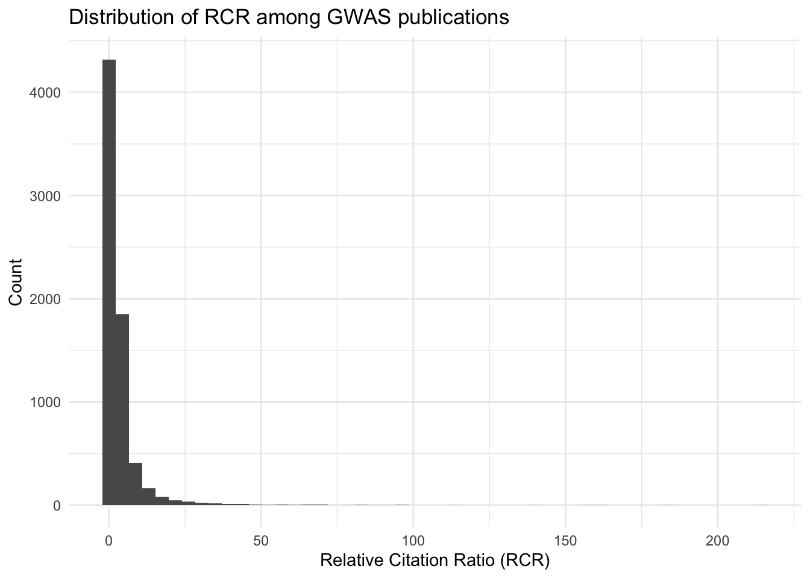
# Summary of citation counts
summary(all_results$relative_citation_ratio) Min. 1st Qu. Median Mean 3rd Qu. Max. NA's
0.0000 0.7022 1.5072 3.6552 3.4473 214.2744 313 # Distribution of raw citation counts
ggplot(all_results, aes(x = citation_count)) +
geom_histogram() +
theme_bw() +
labs(title = "Distribution of Raw Citation Counts among GWAS catalog publications")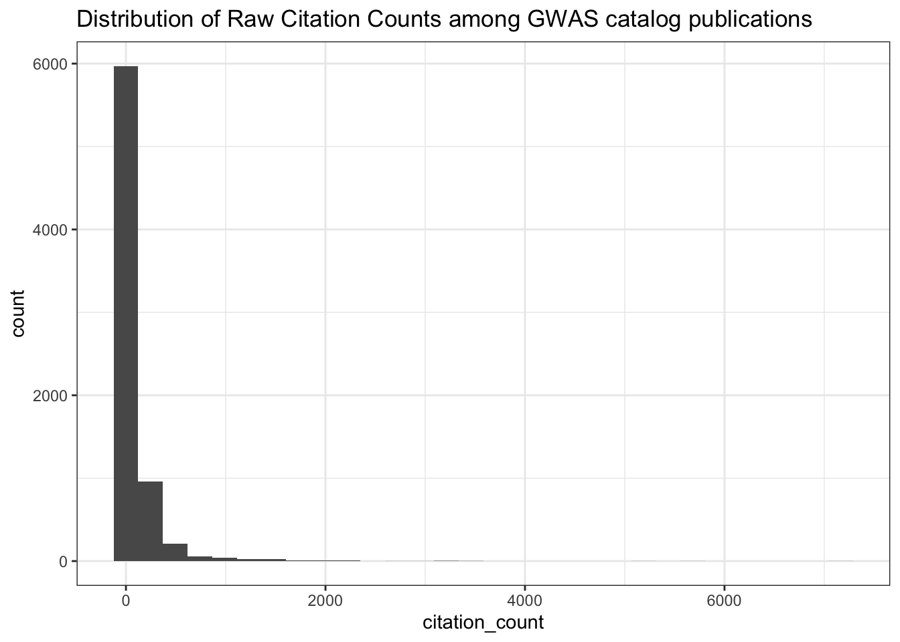
# Summary of citation counts
summary(all_results$citation_count) Min. 1st Qu. Median Mean 3rd Qu. Max.
0.00 11.00 30.00 98.85 88.00 7167.00 # Publication Year of Papers with NA RCR
all_results |>
filter(is.na(relative_citation_ratio)) |>
ggplot(aes(x = year)) +
geom_histogram() +
scale_x_continuous(breaks = seq(min(all_results$year, na.rm = TRUE),
max(all_results$year, na.rm = TRUE), 1)) +
theme_bw() +
labs(title = "Publication Year of Papers with NA RCR")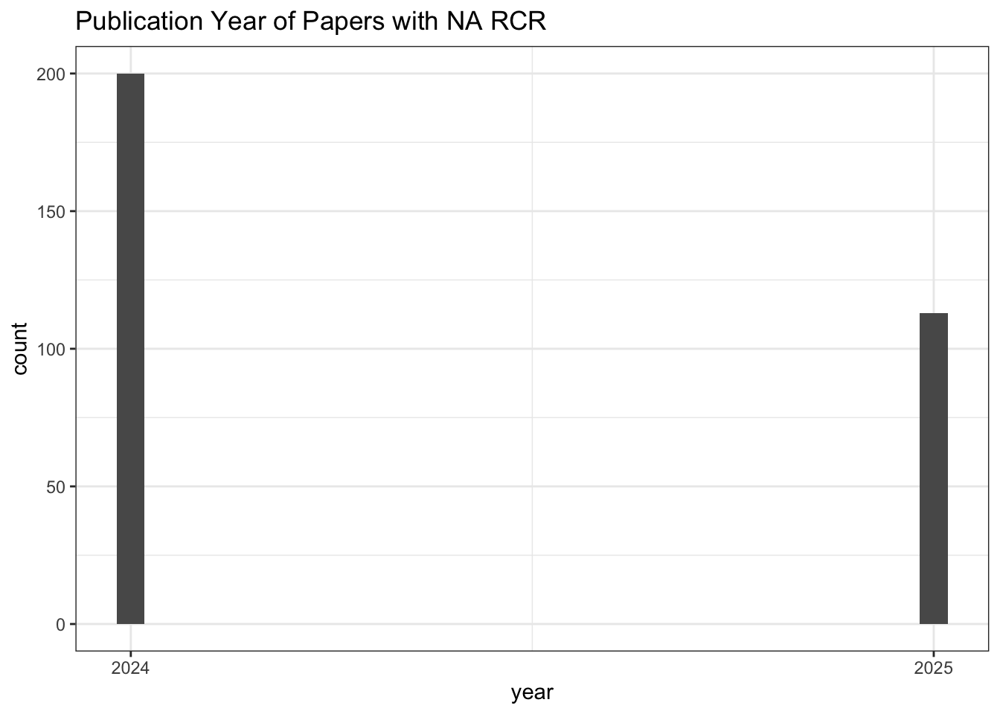
# Count of NA RCR publications
all_results |>
filter(is.na(relative_citation_ratio)) |>
nrow()[1] 313# Values for other citation metrics for papers with
# NA RCR
all_results |>
filter(is.na(relative_citation_ratio)) |>
select(field_citation_rate,
expected_citations_per_year,
citation_count,
citations_per_year,
relative_citation_ratio) field_citation_rate expected_citations_per_year citation_count
1 13.822219 NA 3
2 10.571710 NA 1
3 NA NA 0
4 14.848473 NA 2
5 8.535105 NA 1
6 5.326717 NA 4
7 8.690569 NA 4
8 12.821256 NA 4
9 NA NA 0
10 7.141278 NA 3
11 4.644997 NA 2
12 6.679688 NA 3
13 7.867587 NA 4
14 8.195857 NA 2
15 6.871236 NA 3
16 7.740341 NA 2
17 5.624162 NA 4
18 7.548653 NA 1
19 9.925624 NA 4
20 7.416882 NA 1
21 7.786250 NA 4
22 7.092404 NA 1
23 5.081175 NA 3
24 8.753528 NA 2
25 10.267986 NA 3
26 5.261023 NA 3
27 8.053145 NA 1
28 12.691834 NA 2
29 8.341615 NA 2
30 12.035245 NA 3
31 9.581620 NA 2
32 5.035258 NA 1
33 6.556509 NA 4
34 13.260958 NA 1
35 12.670657 NA 2
36 17.635523 NA 1
37 11.004522 NA 4
38 6.188158 NA 1
39 9.210586 NA 3
40 NA NA 0
41 5.680272 NA 1
42 NA NA 0
43 NA NA 0
44 6.246010 NA 1
45 NA NA 0
46 NA NA 0
47 NA NA 0
48 10.943237 1 4
49 11.343956 1 1
50 NA NA 0
51 NA NA 0
52 7.178167 NA 1
53 5.899517 NA 3
54 5.957288 NA 1
55 5.788062 NA 1
56 8.352559 NA 3
57 5.967739 NA 4
58 14.650482 NA 1
59 7.028102 NA 1
60 10.438102 NA 1
61 6.561768 NA 1
62 11.618921 NA 2
63 NA NA 0
64 13.713313 NA 1
65 13.126046 NA 1
66 4.741029 NA 1
67 6.265367 NA 4
68 12.021621 NA 4
69 10.158264 NA 3
70 NA NA 0
71 6.394729 1 1
72 6.294065 NA 4
73 5.478448 NA 3
74 6.867763 NA 2
75 10.881016 NA 3
76 14.407977 NA 1
77 7.421965 NA 3
78 NA NA 0
79 3.782540 NA 1
80 NA NA 0
81 8.594411 1 1
82 NA NA 0
83 NA NA 0
84 4.286111 1 1
85 8.571692 NA 3
86 13.044869 1 1
87 NA NA 0
88 8.137509 NA 4
89 5.986702 1 1
90 9.589390 1 1
91 6.207806 NA 1
92 9.406565 1 3
93 9.045904 NA 2
94 7.285039 1 1
95 7.567315 1 6
96 NA NA 0
97 9.986868 1 5
98 NA NA 0
99 4.656617 1 3
100 5.909404 1 1
101 2.946023 1 1
102 NA NA 0
103 10.025043 NA 1
104 NA NA 0
105 NA NA 0
106 8.703048 1 4
107 NA NA 0
108 NA NA 0
109 NA NA 0
110 NA NA 0
111 NA NA 0
112 16.324391 NA 1
113 8.733398 NA 4
114 6.475080 NA 3
115 6.945821 NA 1
116 9.963472 NA 1
117 5.167696 NA 2
118 NA NA 0
119 7.438813 NA 1
120 7.802883 NA 2
121 5.901827 NA 4
122 9.525866 NA 3
123 7.669732 NA 2
124 NA NA 0
125 NA NA 1
126 5.378390 NA 2
127 NA NA 0
128 11.150648 NA 1
129 NA NA 0
130 NA NA 0
131 9.765893 NA 3
132 4.045225 NA 2
133 NA NA 0
134 4.656735 NA 2
135 3.795043 NA 2
136 10.497870 NA 2
137 5.871521 NA 1
138 8.461705 NA 1
139 5.535194 NA 1
140 7.781002 NA 2
141 6.291815 NA 3
142 20.510052 NA 1
143 10.065623 NA 3
144 NA NA 0
145 NA NA 0
146 11.430927 NA 4
147 6.687615 1 1
148 NA NA 0
149 NA NA 0
150 NA NA 0
151 3.394942 NA 2
152 11.521195 1 2
153 8.563785 NA 4
154 6.753732 NA 1
155 NA NA 0
156 10.686678 1 2
157 12.012431 1 2
158 NA NA 0
159 8.881688 1 2
160 NA NA 0
161 5.706900 1 1
162 NA NA 0
163 6.664006 1 3
164 9.841970 1 11
165 NA NA 0
166 NA NA 0
167 NA NA 0
168 NA NA 0
169 7.722614 1 2
170 NA NA 0
171 NA NA 0
172 9.361013 1 1
173 NA NA 0
174 5.043550 1 1
175 7.875329 1 4
176 8.682770 1 1
177 8.147498 1 2
178 NA NA 0
179 NA NA 0
180 NA NA 0
181 NA NA 0
182 NA NA 0
183 NA NA 0
184 9.374745 NA 2
185 NA NA 0
186 NA NA 0
187 10.562691 NA 1
188 NA NA 0
189 8.205718 NA 3
190 8.501548 NA 2
191 NA NA 0
192 6.539646 NA 2
193 NA NA 0
194 10.273627 NA 3
195 7.587781 NA 1
196 5.781416 NA 1
197 12.220794 NA 1
198 5.738753 NA 2
199 7.923882 NA 2
200 8.174945 NA 1
201 5.878531 NA 3
202 NA NA 0
203 NA NA 0
204 13.280002 NA 2
205 NA NA 0
206 7.733145 NA 3
207 8.097914 NA 1
208 8.516795 NA 4
209 9.255372 NA 3
210 5.315477 NA 2
211 14.310755 NA 1
212 5.405585 NA 2
213 6.382126 NA 2
214 11.375972 NA 4
215 NA NA 0
216 NA NA 0
217 NA NA 0
218 4.136841 1 1
219 5.914586 1 1
220 NA NA 0
221 7.211545 1 1
222 8.124892 1 1
223 20.770592 1 1
224 10.939767 1 5
225 NA NA 0
226 7.786723 1 2
227 12.538858 1 10
228 8.474163 1 4
229 NA NA 0
230 10.739840 1 2
231 12.344753 1 2
232 14.718939 1 1
233 NA NA 0
234 9.678071 1 2
235 NA NA 0
236 7.516928 1 9
237 NA NA 0
238 12.297992 1 8
239 NA NA 0
240 NA NA 0
241 NA NA 0
242 10.536382 1 5
243 8.298410 1 2
244 6.864535 1 1
245 NA NA 0
246 NA NA 0
247 NA NA 0
248 8.483361 1 1
249 NA NA 0
250 20.780189 1 1
251 14.220258 1 2
252 9.177717 1 1
253 5.823081 1 2
254 9.518582 1 2
255 NA NA 0
256 NA NA 0
257 NA NA 0
258 5.865695 1 1
259 NA NA 0
260 NA NA 0
261 NA NA 0
262 8.642674 1 3
263 NA NA 0
264 NA NA 0
265 10.349763 1 1
266 NA NA 0
267 20.546545 1 1
268 5.570556 NA 4
269 6.477454 NA 2
270 3.041239 NA 2
271 11.370679 NA 2
272 8.488854 NA 2
273 7.185493 NA 4
274 NA NA 0
275 NA NA 0
276 7.513020 NA 4
277 NA NA 0
278 NA NA 0
279 12.141303 NA 1
280 6.708335 NA 3
281 NA NA 0
282 NA NA 0
283 NA NA 0
284 10.009758 NA 1
285 8.402660 NA 4
286 8.319415 NA 1
287 11.766141 NA 3
288 9.436663 1 2
289 NA NA 0
290 9.978703 NA 2
291 9.348072 NA 1
292 11.141964 NA 4
293 6.483287 NA 3
294 5.170441 NA 4
295 12.853719 NA 2
296 5.276942 NA 1
297 6.659194 NA 4
298 10.375466 NA 2
299 6.174495 NA 1
300 10.468332 NA 3
301 NA NA 0
302 8.946897 NA 4
303 6.189566 NA 2
304 14.111746 NA 1
305 6.101725 NA 1
306 NA NA 0
307 7.022852 NA 3
308 7.211943 NA 2
309 13.517263 NA 1
310 NA NA 0
311 NA NA 0
312 12.081060 1 2
313 NA NA 0
citations_per_year relative_citation_ratio
1 3 NA
2 1 NA
3 0 NA
4 2 NA
5 1 NA
6 4 NA
7 4 NA
8 4 NA
9 0 NA
10 3 NA
11 2 NA
12 3 NA
13 4 NA
14 2 NA
15 3 NA
16 2 NA
17 4 NA
18 1 NA
19 4 NA
20 1 NA
21 4 NA
22 1 NA
23 3 NA
24 2 NA
25 3 NA
26 3 NA
27 1 NA
28 2 NA
29 2 NA
30 3 NA
31 2 NA
32 1 NA
33 4 NA
34 1 NA
35 2 NA
36 1 NA
37 4 NA
38 1 NA
39 3 NA
40 0 NA
41 1 NA
42 0 NA
43 0 NA
44 1 NA
45 0 NA
46 0 NA
47 0 NA
48 4 NA
49 1 NA
50 0 NA
51 0 NA
52 1 NA
53 3 NA
54 1 NA
55 1 NA
56 3 NA
57 4 NA
58 1 NA
59 1 NA
60 1 NA
61 1 NA
62 2 NA
63 0 NA
64 1 NA
65 1 NA
66 1 NA
67 4 NA
68 4 NA
69 3 NA
70 0 NA
71 1 NA
72 4 NA
73 3 NA
74 2 NA
75 3 NA
76 1 NA
77 3 NA
78 0 NA
79 1 NA
80 0 NA
81 1 NA
82 0 NA
83 0 NA
84 1 NA
85 3 NA
86 1 NA
87 0 NA
88 4 NA
89 1 NA
90 1 NA
91 1 NA
92 3 NA
93 2 NA
94 1 NA
95 6 NA
96 0 NA
97 5 NA
98 0 NA
99 3 NA
100 1 NA
101 1 NA
102 0 NA
103 1 NA
104 0 NA
105 0 NA
106 4 NA
107 0 NA
108 0 NA
109 0 NA
110 0 NA
111 0 NA
112 1 NA
113 4 NA
114 3 NA
115 1 NA
116 1 NA
117 2 NA
118 0 NA
119 1 NA
120 2 NA
121 4 NA
122 3 NA
123 2 NA
124 0 NA
125 1 NA
126 2 NA
127 0 NA
128 1 NA
129 0 NA
130 0 NA
131 3 NA
132 2 NA
133 0 NA
134 2 NA
135 2 NA
136 2 NA
137 1 NA
138 1 NA
139 1 NA
140 2 NA
141 3 NA
142 1 NA
143 3 NA
144 0 NA
145 0 NA
146 4 NA
147 1 NA
148 0 NA
149 0 NA
150 0 NA
151 2 NA
152 2 NA
153 4 NA
154 1 NA
155 0 NA
156 2 NA
157 2 NA
158 0 NA
159 2 NA
160 0 NA
161 1 NA
162 0 NA
163 3 NA
164 11 NA
165 0 NA
166 0 NA
167 0 NA
168 0 NA
169 2 NA
170 0 NA
171 0 NA
172 1 NA
173 0 NA
174 1 NA
175 4 NA
176 1 NA
177 2 NA
178 0 NA
179 0 NA
180 0 NA
181 0 NA
182 0 NA
183 0 NA
184 2 NA
185 0 NA
186 0 NA
187 1 NA
188 0 NA
189 3 NA
190 2 NA
191 0 NA
192 2 NA
193 0 NA
194 3 NA
195 1 NA
196 1 NA
197 1 NA
198 2 NA
199 2 NA
200 1 NA
201 3 NA
202 0 NA
203 0 NA
204 2 NA
205 0 NA
206 3 NA
207 1 NA
208 4 NA
209 3 NA
210 2 NA
211 1 NA
212 2 NA
213 2 NA
214 4 NA
215 0 NA
216 0 NA
217 0 NA
218 1 NA
219 1 NA
220 0 NA
221 1 NA
222 1 NA
223 1 NA
224 5 NA
225 0 NA
226 2 NA
227 10 NA
228 4 NA
229 0 NA
230 2 NA
231 2 NA
232 1 NA
233 0 NA
234 2 NA
235 0 NA
236 9 NA
237 0 NA
238 8 NA
239 0 NA
240 0 NA
241 0 NA
242 5 NA
243 2 NA
244 1 NA
245 0 NA
246 0 NA
247 0 NA
248 1 NA
249 0 NA
250 1 NA
251 2 NA
252 1 NA
253 2 NA
254 2 NA
255 0 NA
256 0 NA
257 0 NA
258 1 NA
259 0 NA
260 0 NA
261 0 NA
262 3 NA
263 0 NA
264 0 NA
265 1 NA
266 0 NA
267 1 NA
268 4 NA
269 2 NA
270 2 NA
271 2 NA
272 2 NA
273 4 NA
274 0 NA
275 0 NA
276 4 NA
277 0 NA
278 0 NA
279 1 NA
280 3 NA
281 0 NA
282 0 NA
283 0 NA
284 1 NA
285 4 NA
286 1 NA
287 3 NA
288 2 NA
289 0 NA
290 2 NA
291 1 NA
292 4 NA
293 3 NA
294 4 NA
295 2 NA
296 1 NA
297 4 NA
298 2 NA
299 1 NA
300 3 NA
301 0 NA
302 4 NA
303 2 NA
304 1 NA
305 1 NA
306 0 NA
307 3 NA
308 2 NA
309 1 NA
310 0 NA
311 0 NA
312 2 NA
313 0 NA# Publication Year of Paper with zero RCR
all_results |>
filter(relative_citation_ratio == 0) |>
ggplot(aes(x = year)) +
geom_histogram() +
scale_x_continuous(breaks = seq(min(all_results$year, na.rm = TRUE),
max(all_results$year, na.rm = TRUE), 1)) +
theme_bw() +
labs(title = "Publication Year of Papers with Zero RCR")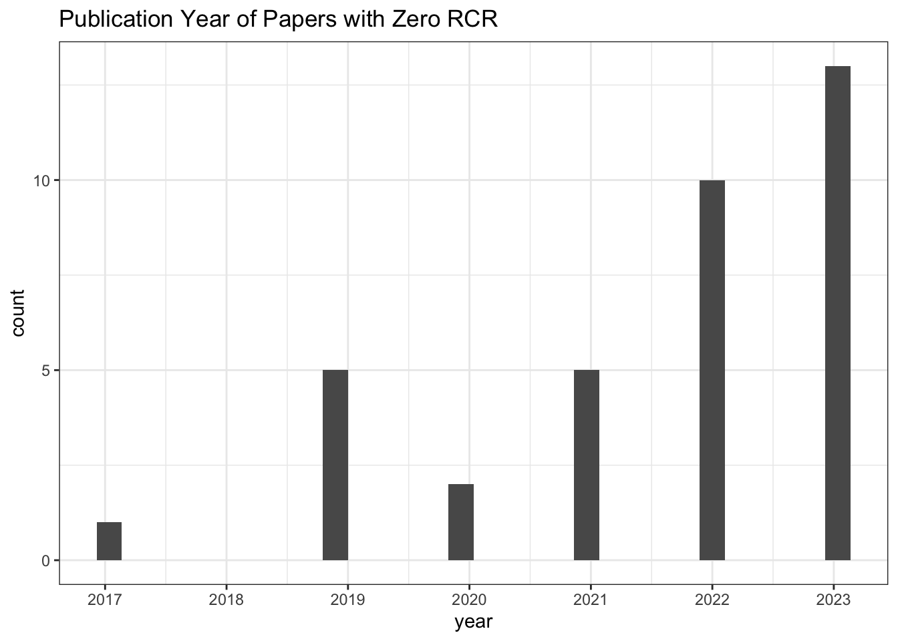
# Count of zero RCR publications
all_results |>
filter(relative_citation_ratio == 0) |>
nrow()[1] 36# Values for other citation metrics for papers with
# zero RCR
all_results |>
filter(relative_citation_ratio == 0) |>
select(field_citation_rate,
expected_citations_per_year,
citation_count,
citations_per_year,
relative_citation_ratio) field_citation_rate expected_citations_per_year citation_count
1 0.9545455 0.7909298 0
2 3.0000000 1.6893112 0
3 2.1426202 0.8013203 0
4 2.2334348 0.8352841 0
5 2.5710387 0.9615448 0
6 1.2419355 0.4644725 0
7 3.4963504 1.3076029 0
8 1.9852941 0.7424817 0
9 3.8904110 1.4549779 0
10 4.3062645 2.2200704 0
11 2.2616580 1.3738025 0
12 1.3666667 0.5111208 0
13 2.9455782 1.1016192 0
14 3.4594700 1.8636502 0
15 3.1554861 1.5807539 0
16 4.0925926 1.9201322 0
17 6.1400778 2.6616403 0
18 3.9464286 1.4759280 0
19 3.3018868 1.2348753 0
20 1.9534884 1.2363823 0
21 1.1315789 0.8698732 0
22 5.1963746 2.6496372 0
23 1.6365314 1.0896441 0
24 3.9064748 2.0332596 0
25 1.4405050 0.9596640 0
26 3.9512017 1.8689267 0
27 2.8148148 1.6204683 0
28 4.0724686 2.0962435 0
29 2.5912585 0.9691069 0
30 3.0224230 1.6978193 0
31 2.9036145 1.4895372 0
32 0.9325843 0.7757177 0
33 1.6545455 1.0371799 0
34 2.3425287 1.2863369 0
35 3.3600000 1.2566091 0
36 0.9473684 0.7810719 0
citations_per_year relative_citation_ratio
1 0 0
2 0 0
3 0 0
4 0 0
5 0 0
6 0 0
7 0 0
8 0 0
9 0 0
10 0 0
11 0 0
12 0 0
13 0 0
14 0 0
15 0 0
16 0 0
17 0 0
18 0 0
19 0 0
20 0 0
21 0 0
22 0 0
23 0 0
24 0 0
25 0 0
26 0 0
27 0 0
28 0 0
29 0 0
30 0 0
31 0 0
32 0 0
33 0 0
34 0 0
35 0 0
36 0 0# Spearman correlation: citation count vs RCR
cor(all_results$citation_count,
all_results$relative_citation_ratio,
method = "spearman",
use = "pairwise.complete.obs")[1] 0.8763393# Spearman correlation: citations per year vs RCR
cor(all_results$citations_per_year,
all_results$relative_citation_ratio,
method = "spearman",
use = "pairwise.complete.obs")[1] 0.9867908# RCR vs citation count (log x-axis)
ggplot(all_results, aes(x = citation_count + 1, y = relative_citation_ratio)) +
scale_x_log10() +
geom_point() +
theme_bw()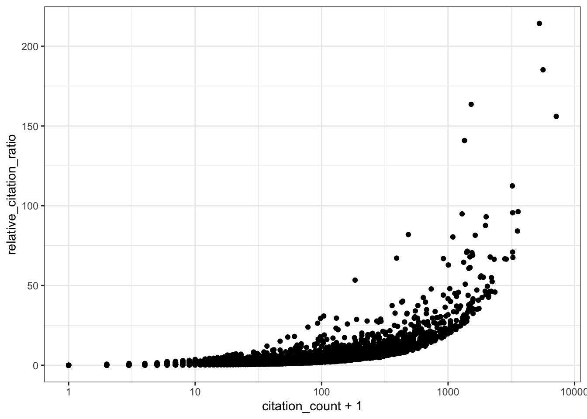
# RCR vs expected citations per year
ggplot(all_results, aes(x = expected_citations_per_year, y = relative_citation_ratio)) +
scale_x_log10() +
geom_point() +
theme_bw()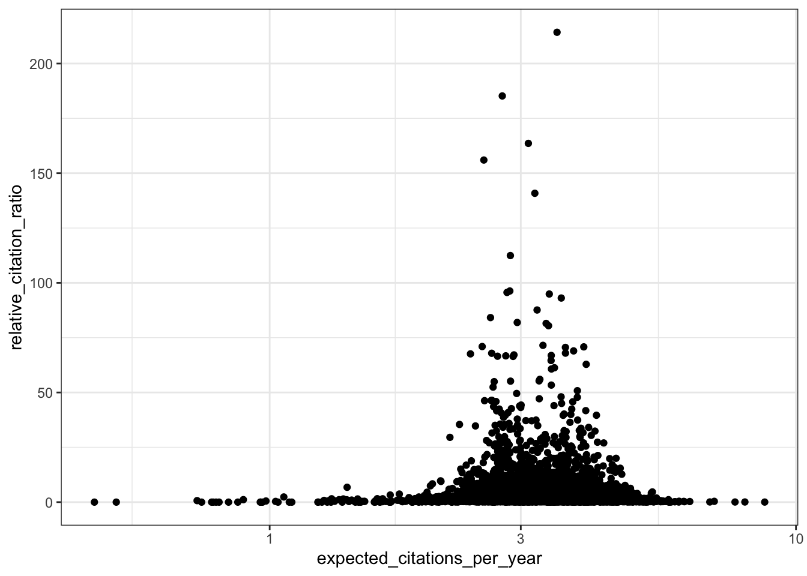
# RCR vs field citation rate
ggplot(all_results, aes(x = field_citation_rate, y = relative_citation_ratio)) +
scale_x_log10() +
geom_point() +
theme_bw()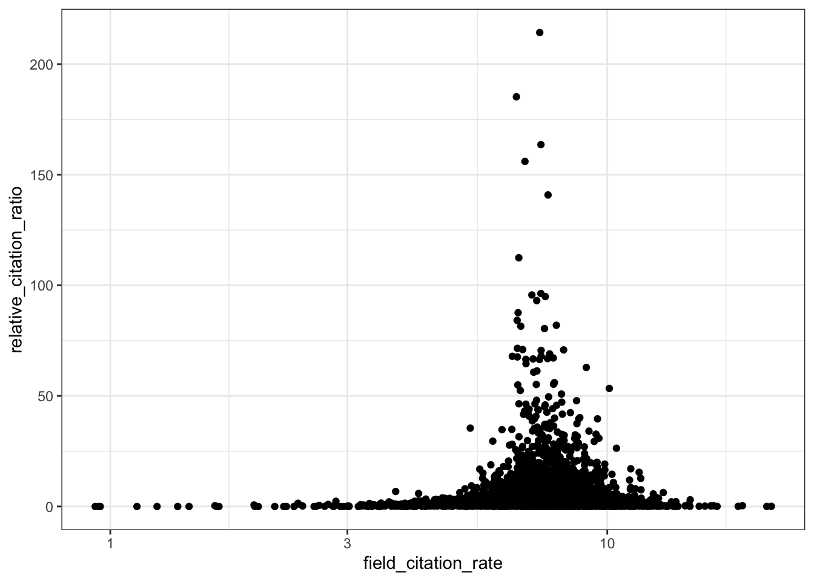
Reales & Wallace observe bump in the RCR of papers published in the last two years (their conclusion is that citation metrics stabilise after two year) - do we observe the same trend?
# RCR vs publication year (raw scale)
all_results |>
filter(!is.na(relative_citation_ratio), relative_citation_ratio != 0) |>
ggplot(aes(x = year, y = relative_citation_ratio)) +
geom_point() +
theme_bw() +
labs(x = 'Year')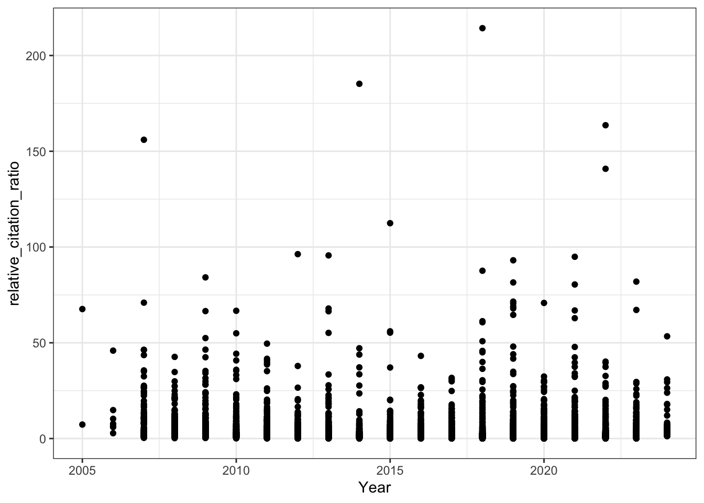
# RCR vs year (log y-axis)
all_results |>
filter(!is.na(relative_citation_ratio), relative_citation_ratio != 0) |>
ggplot(aes(x = year, y = relative_citation_ratio)) +
scale_y_log10() +
geom_point() +
theme_bw() +
labs(title = "RCR over time",
x = 'Year')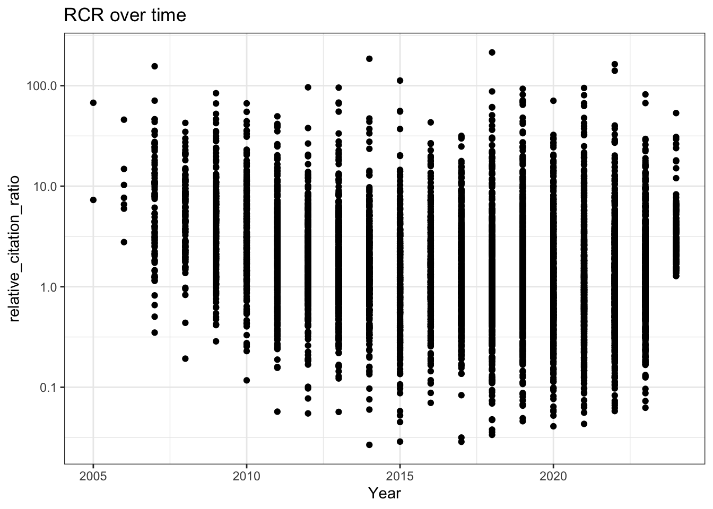
# Boxplot of RCRs per year
all_results |>
filter(!is.na(relative_citation_ratio), relative_citation_ratio != 0) |>
ggplot(aes(x = factor(year), y = relative_citation_ratio)) +
geom_boxplot(outlier.size = 0.5) +
scale_y_log10() +
theme_bw() +
labs(x = 'Year')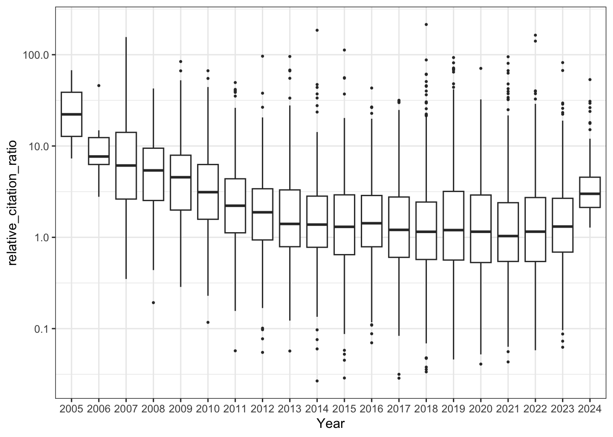
# Citations per year over time
all_results |>
filter(!is.na(relative_citation_ratio), relative_citation_ratio != 0) |>
ggplot(aes(x = year, y = citations_per_year)) +
geom_point() +
theme_bw()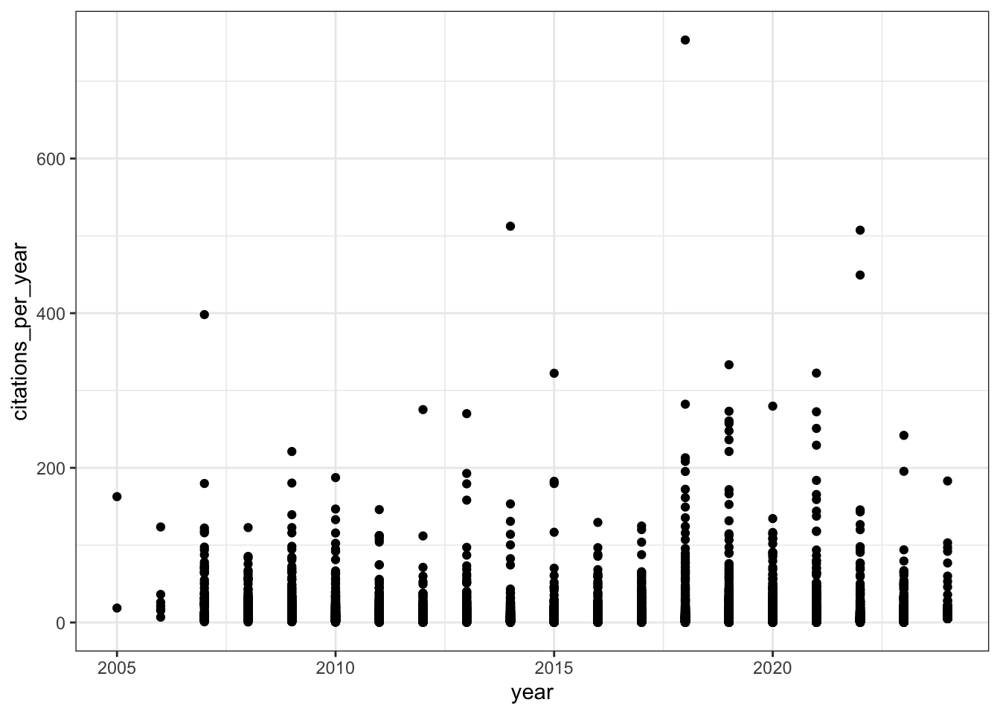
sessionInfo()R version 4.3.1 (2023-06-16)
Platform: aarch64-apple-darwin20 (64-bit)
Running under: macOS 15.5
Matrix products: default
BLAS: /Library/Frameworks/R.framework/Versions/4.3-arm64/Resources/lib/libRblas.0.dylib
LAPACK: /Library/Frameworks/R.framework/Versions/4.3-arm64/Resources/lib/libRlapack.dylib; LAPACK version 3.11.0
locale:
[1] en_US.UTF-8/en_US.UTF-8/en_US.UTF-8/C/en_US.UTF-8/en_US.UTF-8
time zone: America/Los_Angeles
tzcode source: internal
attached base packages:
[1] stats graphics grDevices datasets utils methods base
other attached packages:
[1] ggplot2_3.5.2 purrr_1.1.0 data.table_1.17.8 dplyr_1.1.4
[5] jsonlite_2.0.0 httr_1.4.7 workflowr_1.7.1
loaded via a namespace (and not attached):
[1] gtable_0.3.6 compiler_4.3.1 renv_1.0.3 promises_1.3.3
[5] tidyselect_1.2.1 Rcpp_1.1.0 stringr_1.5.1 git2r_0.36.2
[9] callr_3.7.6 later_1.4.2 jquerylib_0.1.4 scales_1.4.0
[13] yaml_2.3.10 fastmap_1.2.0 R6_2.6.1 labeling_0.4.3
[17] generics_0.1.4 curl_6.4.0 knitr_1.50 tibble_3.3.0
[21] rprojroot_2.1.0 RColorBrewer_1.1-3 bslib_0.9.0 pillar_1.11.0
[25] rlang_1.1.6 cachem_1.1.0 stringi_1.8.7 httpuv_1.6.16
[29] xfun_0.52 getPass_0.2-4 fs_1.6.6 sass_0.4.10
[33] cli_3.6.5 withr_3.0.2 magrittr_2.0.3 ps_1.9.1
[37] grid_4.3.1 digest_0.6.37 processx_3.8.6 rstudioapi_0.17.1
[41] lifecycle_1.0.4 vctrs_0.6.5 evaluate_1.0.4 glue_1.8.0
[45] farver_2.1.2 whisker_0.4.1 rmarkdown_2.29 tools_4.3.1
[49] pkgconfig_2.0.3 htmltools_0.5.8.1